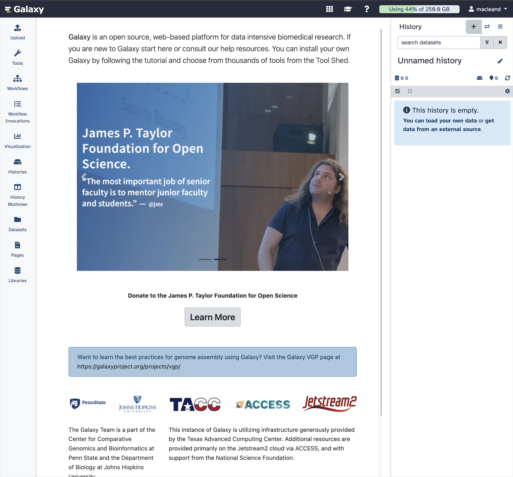
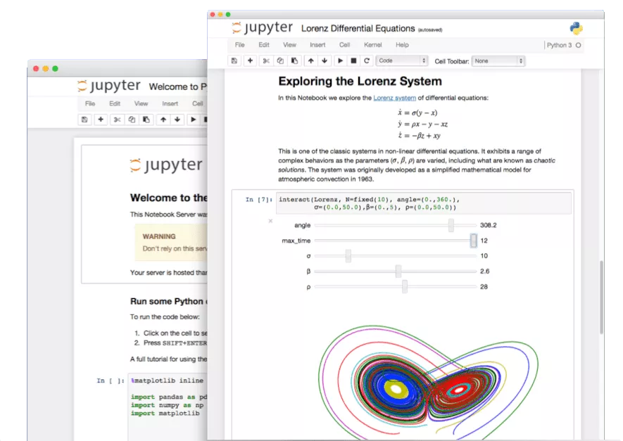
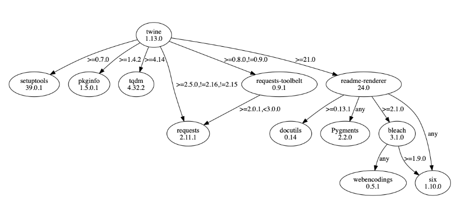

Free Computers!*
*Terms and Conditions may apply
Dan MacLean
This talk
Discussing some options in ‘free’ computing resources in bioinformatics
Not This Talk
Best Practice Guide to Bioinformatics Analyses
Free?
- Free as in ‘free beer’ (gratis)
- Trade offs in cost/performance
- Expertise still needed
Pick Two
- Cheap
- Power
- Accessible
Three options
- Amazon Web Services (AWS)
- Galaxy (usegalaxy.org)
- Google Colab and Jupyter
AWS
Amazon Web Services
- Cheap*, Power,
Accessible

cbre.com
*amazing value but always some charge
Amazon Web Services
- Command line based
- Only restriction is your knowledge
aws terminal
Galaxy
A web tool for bioinformatics
- Cheap,
Power, Accessible - Graphical user interface
- Low barrier to tool use
- Publicly available
Galaxy Demo
- Perform sequence Quality Control
- Upload some FASTQ reads
- Run
FASTQC - Examine output
- Assemble PacBio Data
- Get data from history
- Run
minimapandminiasm - Run
assemblystats
The Main Page
usegalaxy.org
Using Galaxy
Workflows
Your Galaxy
- Possible to install Galaxy on
- Your own machine
- AWS
- Galaxy on AnVIL - (Commercial and Academic)
Google Colab
Google Colab
- Cheap(-ish), Power(-ish), Accessible(-ish)
- A generous helping of RAM (usually 12-15 GB)
- A CPU with good processing power
- Access to a GPU (Graphics Processing Unit) for intensive calculations
- About 100 GB of temporary storage
- Temporary
google.com
Jupyter Notebooks
Literate Computing
jupyter.org
Using Google Drive for Persistence
Installing software with package managers
App stores for useful software
pypi.org
Package Managers
aptpipcondabioconda
apt
- Colab runs Ubuntu, therefore update the system with
apt - For tools that seem fundamental to a computer:
gzipwget- system wide libraries:
libgcc - programming languages:
java,R
pip
- default for Python
- e.g.
!pip install biopython - limited to Python packages
conda and bioconda
- More powerful and general
- Swiss army knife for scientific software
Environmentsprevent conflictbiocondaspecial section of bioinformatics tools- 7000 packages maintained by bioinformatics community
Installing conda and bioconda
Install conda in a code cell:
Configure it to use bioconda as a package source:
!conda config --add channels defaults
!conda config --add channels bioconda
!conda config --add channels conda-forgeInstall the packages you want:
Google Colab Demo
- Setup machine
- Install conda and bioconda
- Install packages needed
- Connect the GDrive
- Perform sequence Quality Control
- Extract Reads Uploaded Archive
- Run
FASTQC - Examine output
- Call Sequence Variants
- Align reads to reference using
bwa - Call variants with
samtoolsandbcftools - Examine output
- Align reads to reference using
Google Colab Demo
Summary
- There are free computers for bioinformatics analysis
- Three places to find them are AWS, Galaxy and Colab
- Each has its trade offs
- Colab is probably the best